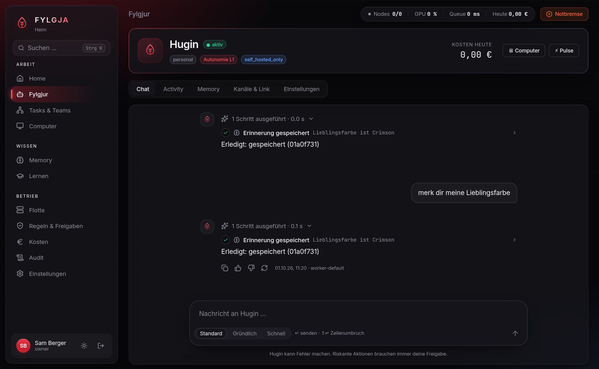
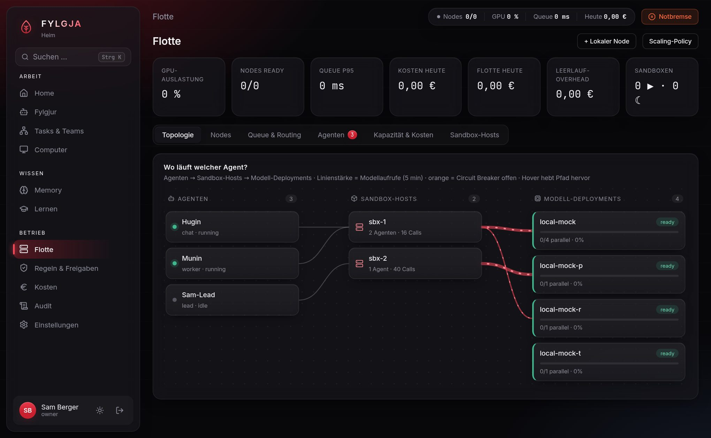

Fylgja is a Go server with a PostgreSQL database. Each agent has its own memory, can run on a schedule, can use a browser and a shell inside a sandbox, and asks you before it does anything risky. You run it yourself, on your own machines or rented GPUs.

The chat view. Every answer has a list of the steps behind it. This one is from a local test with a mock model, so the answers are boring.
Most agent setups forget everything when the tab closes. Here an agent is a long-lived thing with an ID, a memory and a log of everything it has done. You can come back a week later and it still knows what you told it.
Agents can also start things themselves. You give them schedules or triggers, and they message you on Telegram, Discord or in the web UI when something needs you.

Fleet view: which agent runs where, and how busy each model deployment is. Sample data.
A system prompt that says "never delete files" is a suggestion. The model can be talked out of it by a web page it reads. So the rules are checked in the code that actually runs the tools, after the model has made its request and before anything happens.
Tool calls are matched against rules written in CEL. The default is deny. Risky actions pause and wait for you to approve them in the UI or in chat.
Text that came from the web or from a file is marked as tainted. A tainted run cannot trigger sensitive tools without a human saying yes. Documents can also be read in a quarantine step that has no tools.
Credentials sit in an encrypted vault and are never put into prompts. Outgoing requests go through an SSRF filter. Audit entries are hash-chained, so editing one afterwards shows up.
The repo has a small corpus of injection attacks as a Go test (evals/). All 8 are blocked right now. It is a regression test, not a proof.
You need Docker. The compose file starts the server and Postgres.
git clone https://github.com/realblxckcodex/fylgja cd fylgja docker compose -f deploy/docker-compose.yml up
Then open http://localhost:8088/setup, create the owner account and point Fylgja at a model. That can be a local Ollama or vLLM endpoint, or a RunPod account. Config options are in deploy/fylgja.example.yaml.
I have not timed a fresh install on a clean machine, so I won't promise a number of minutes.
This is an early release. Only one person has tested it so far. The Go packages and the Postgres integration have tests. Several external integrations have only been tested against fakes.
| Works and is tested | Written, not tried against the real thing | Not built |
|---|---|---|
| Run engine and journal, memory, policy and approvals, router and queue, web UI, audit log | RunPod provisioning, Discord and Telegram bots, Docker/gVisor sandbox, WebAuthn in a browser | Firecracker, live voice, Microsoft 365 and native Google connectors, skill marketplace, Telegram Mini App, per-node mTLS |
If you try it and something breaks, an issue on GitHub with the log is the most useful thing you can send.